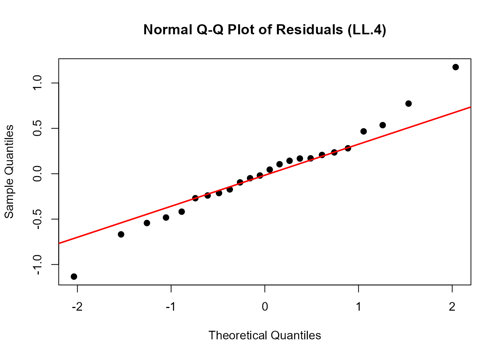
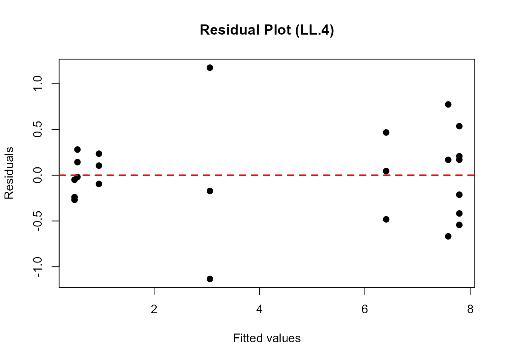
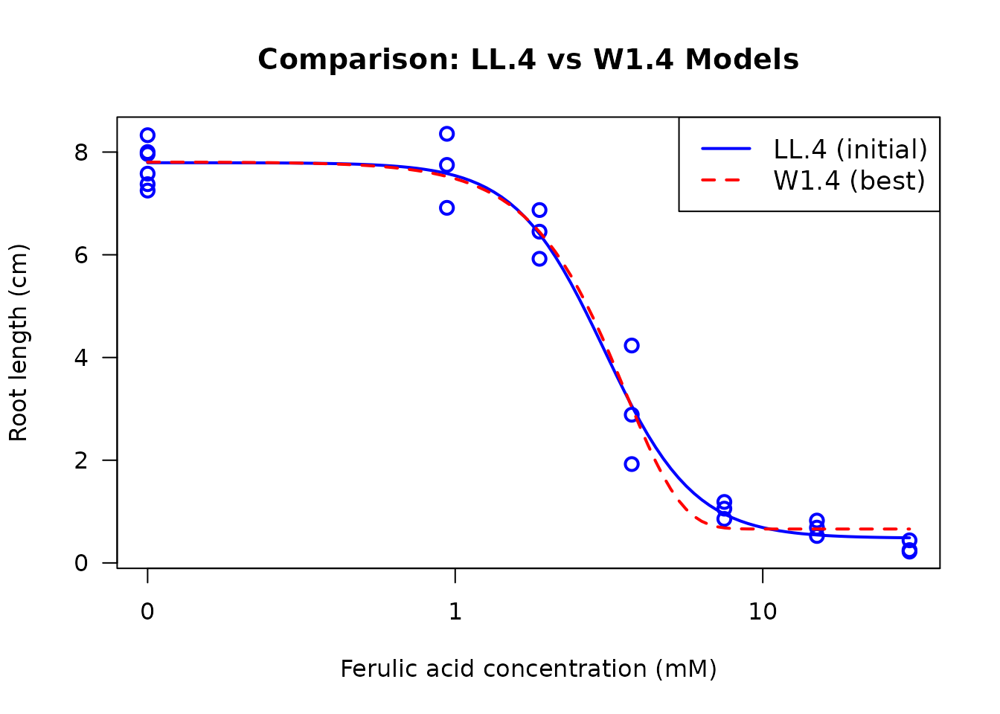
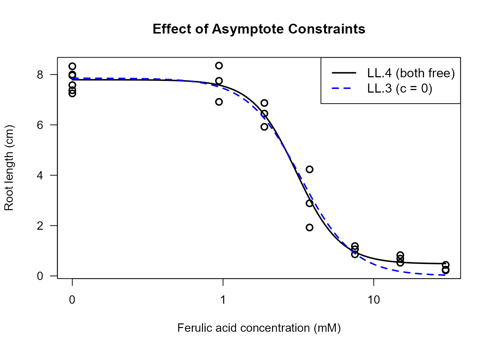
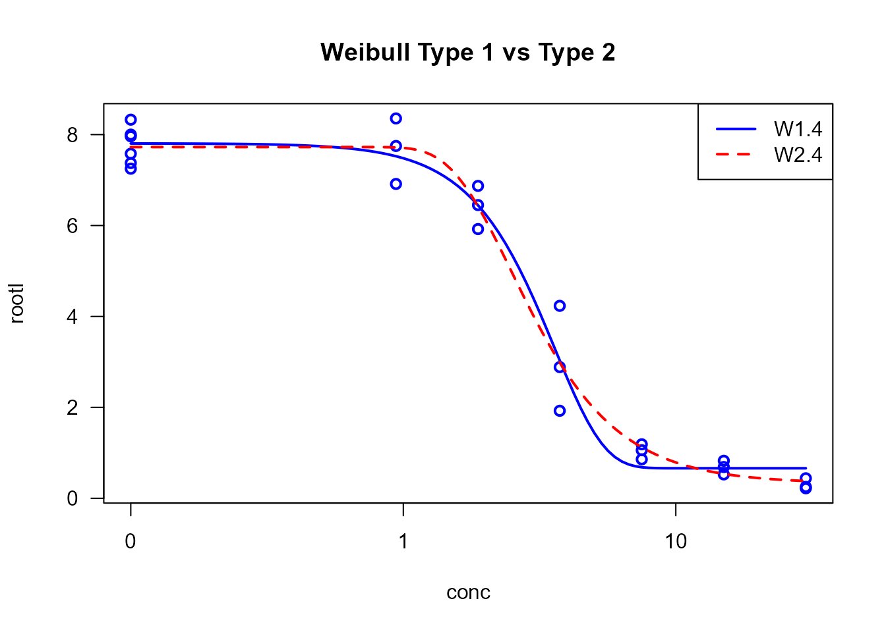

A Practical Workflow for Dose-Response Analysis
Hannes Reinwald
2026-05-26
Source:vignettes/dose-response-workflow.Rmd
dose-response-workflow.RmdExecutive Summary
This vignette provides a comprehensive, step-by-step workflow for
conducting proper dose-response analysis using the drc
package. We demonstrate the complete analysis process from initial model
fitting through model selection, validation, and interpretation. By
following this workflow, even inexperienced users can perform rigorous
dose-response modeling while avoiding common pitfalls.
Introduction
Dose-response analysis is fundamental in toxicology, ecotoxicology,
pharmacology, and related fields. The relationship between dose (or
concentration) and biological response often follows non-linear patterns
that require specialized statistical models. The drc
package provides a comprehensive framework for fitting, comparing, and
interpreting dose-response models.
What You Will Learn
This vignette demonstrates a complete workflow including:
- Initial exploratory model fitting
- Visual assessment of model adequacy
- Statistical evaluation of model fit
- Systematic model comparison and selection
- Model-averaged estimation for robust inference
- Understanding the impact of parameter constraints
- Choosing appropriate models for different data types
The Example Dataset
We will use the ryegrass dataset, which contains
measurements of root length in perennial ryegrass (Lolium perenne
L.) exposed to different concentrations of ferulic acid, a phenolic
compound that inhibits plant growth.
# Load the ryegrass dataset
data(ryegrass)
# Examine the data structure
head(ryegrass, 10)
#> rootl conc
#> 1 7.580000 0.00
#> 2 8.000000 0.00
#> 3 8.328571 0.00
#> 4 7.250000 0.00
#> 5 7.375000 0.00
#> 6 7.962500 0.00
#> 7 8.355556 0.94
#> 8 6.914286 0.94
#> 9 7.750000 0.94
#> 10 6.871429 1.88
# Summary statistics
summary(ryegrass)
#> rootl conc
#> Min. :0.2200 Min. : 0.000
#> 1st Qu.:0.8491 1st Qu.: 0.705
#> Median :5.0778 Median : 2.815
#> Mean :4.3272 Mean : 7.384
#> 3rd Qu.:7.4262 3rd Qu.: 9.375
#> Max. :8.3556 Max. :30.000
# Simple exploratory plot
plot(rootl ~ conc, data = ryegrass,
xlab = "Ferulic acid concentration (mM)",
ylab = "Root length (cm)",
main = "Ryegrass Root Growth vs. Ferulic Acid Concentration",
pch = 16, cex = 1.2)The dataset contains 24 observations with: - conc:
Ferulic acid concentration in millimolar (mM) - rootl: Root
length in centimeters (cm)
We observe a clear dose-response relationship: as the concentration increases, root length decreases, indicating an inhibitory effect of ferulic acid on ryegrass root growth.
Step 1: Initial Model Fitting
Choosing a Starting Model
For a typical monotonic dose-response curve, the four-parameter
log-logistic model (LL.4) is an excellent starting point.
It is flexible, well-characterized, and commonly used in toxicology.
The LL.4 model has the form:
where: - b: Slope parameter (steepness of the curve) - c: Lower asymptote (response at infinite dose) - d: Upper asymptote (response at zero dose, control response) - e: ED50 or EC50 (dose producing 50% of the maximal effect)
Fitting the Initial Model
# Fit a four-parameter log-logistic model
ryegrass.LL4 <- drm(rootl ~ conc, data = ryegrass, fct = LL.4())
# Display model summary
summary(ryegrass.LL4)
#>
#> Model fitted: Log-logistic (ED50 as parameter) (4 parms)
#>
#> Parameter estimates:
#>
#> Estimate Std. Error t-value p-value
#> b:(Intercept) 2.98222 0.46506 6.4125 2.960e-06 ***
#> c:(Intercept) 0.48141 0.21219 2.2688 0.03451 *
#> d:(Intercept) 7.79296 0.18857 41.3272 < 2.2e-16 ***
#> e:(Intercept) 3.05795 0.18573 16.4644 4.268e-13 ***
#> ---
#> Signif. codes: 0 '***' 0.001 '**' 0.01 '*' 0.05 '.' 0.1 ' ' 1
#>
#> Residual standard error:
#>
#> 0.5196256 (20 degrees of freedom)The summary provides: - Parameter estimates and their standard errors - Residual standard error - Model convergence information
Interpretation of Parameters: - The d
parameter (upper limit) represents the control root length (at zero
concentration) - The c parameter (lower limit) represents
the minimum root length at high concentrations - The e
parameter (ED50) is the concentration causing 50% reduction from control
- The b parameter controls the steepness of the
dose-response curve
Step 2: Visual Assessment of Model Fit
Visual diagnostics are crucial for assessing whether the fitted model adequately describes the data. We use two primary tools: the standard dose-response plot and quantile-quantile (Q-Q) plots.
Standard Dose-Response Plot
# Plot the fitted model with data points
plot(ryegrass.LL4, type = "all",
main = "LL.4 Model Fit to Ryegrass Data",
xlab = "Ferulic acid concentration (mM)",
ylab = "Root length (cm)",
lwd = 2, cex = 1.2)The plot shows: - Observed data points - Fitted dose-response curve - Overall pattern of fit
What to Look For: - Do the fitted values follow the general trend of the data? - Are there systematic deviations (e.g., all points above or below the curve in certain regions)? - Are there outliers that might influence the fit?
Quantile-Quantile (Q-Q) Plot
Q-Q plots assess whether the model residuals follow a normal distribution, which is an assumption of the fitting procedure.
# Create Q-Q plot for residual diagnostics
qqnorm(residuals(ryegrass.LL4),
main = "Normal Q-Q Plot of Residuals (LL.4)",
pch = 16, cex = 1.2)
qqline(residuals(ryegrass.LL4), col = "red", lwd = 2)
Interpretation: - Points should fall approximately along the diagonal line - Systematic deviations suggest non-normality of residuals - Deviations at the extremes are common and often acceptable - Severe deviations may indicate model inadequacy or outliers
Residual Plot
An additional useful diagnostic is plotting residuals against fitted values:
# Residuals vs. Fitted values
plot(fitted(ryegrass.LL4), residuals(ryegrass.LL4),
xlab = "Fitted values",
ylab = "Residuals",
main = "Residual Plot (LL.4)",
pch = 16, cex = 1.2)
abline(h = 0, col = "red", lwd = 2, lty = 2)
What to Look For: - Random scatter around zero (no systematic pattern) - Constant variance across fitted values (homoscedasticity) - No obvious outliers or influential points
Step 3: Statistical Evaluation of Model Fit
Beyond visual assessment, we use formal statistical tests to evaluate model adequacy and significance.
Test for Dose Effect: noEffect()
The noEffect() function performs a likelihood ratio test
comparing the dose-response model to a null model (no dose effect).
# Test whether there is a significant dose effect
noEffect(ryegrass.LL4)
#> Chi-square test Df p-value
#> 91.87776 3.00000 0.00000Interpretation: - The null hypothesis is “no dose effect” (all responses are equal) - A significant p-value (< 0.05) indicates that the dose-response model fits significantly better than the null model - This confirms that ferulic acid concentration has a significant effect on root length
Goodness-of-Fit Test: modelFit()
The modelFit() function assesses whether the model
adequately describes the data using a lack-of-fit test.
# Perform goodness-of-fit test
modelFit(ryegrass.LL4)
#> Lack-of-fit test
#>
#> ModelDf RSS Df F value p value
#> ANOVA 17 5.1799
#> DRC model 20 5.4002 3 0.2411 0.8665Interpretation: - This test compares the fitted model to a saturated model (perfect fit) - A non-significant p-value suggests adequate fit (model is not significantly worse than perfect fit) - A significant p-value indicates lack of fit (model may be inadequate) - Note: This test requires replication at dose levels
Estimating Effective Doses: ED()
Effective dose (ED) or effective concentration (EC) values are key outputs in dose-response analysis. They represent the dose required to produce a specified level of effect.
# Estimate EC10, EC20, and EC50 with 95% confidence intervals
# Using delta method for confidence intervals
ed_values <- ED(ryegrass.LL4, respLev = c(10, 20, 50), interval = "delta")
#>
#> Estimated effective doses
#>
#> Estimate Std. Error Lower Upper
#> e:10 1.46371 0.18677 1.07411 1.85330
#> e:20 1.92109 0.17774 1.55032 2.29186
#> e:50 3.05795 0.18573 2.67053 3.44538
ed_values
#> Estimate Std. Error Lower Upper
#> e:10 1.463706 0.1867704 1.074109 1.853302
#> e:20 1.921091 0.1777432 1.550325 2.291857
#> e:50 3.057955 0.1857313 2.670526 3.445384Understanding ED Values: - EC10: Concentration causing 10% effect (reduction in root length) - EC20: Concentration causing 20% effect - EC50: Concentration causing 50% effect (often used as a summary measure of potency)
Confidence Intervals: - The
interval = "delta" argument uses the delta method for CI
estimation - Alternative methods include "fls" (fieller),
"tfls" (transformed fieller) - Narrower CIs indicate more
precise estimates
Alternative Confidence Interval Methods
# Compare different confidence interval methods
cat("Delta method:\n")
#> Delta method:
ED(ryegrass.LL4, respLev = 50, interval = "delta")
#>
#> Estimated effective doses
#>
#> Estimate Std. Error Lower Upper
#> e:50 3.05795 0.18573 2.67053 3.44538
cat("\nFieller method:\n")
#>
#> Fieller method:
ED(ryegrass.LL4, respLev = 50, interval = "fls")
#>
#> Estimated effective doses
#>
#> Estimate Std. Error Lower Upper
#> e:50 21.28399 0.18573 14.44757 31.35531The Fieller method is often preferred for ED50 estimation as it accounts for the ratio nature of the parameter.
Step 4: Model Comparison and Selection
A critical step in dose-response analysis is comparing alternative models to select the most appropriate one. Different model families may fit the data better depending on the underlying biological mechanism.
Comparing Multiple Models
We’ll compare the initial LL.4 model with several alternatives:
- LN.4: Four-parameter log-normal model
- W1.4: Four-parameter Weibull type 1 model
- W2.4: Four-parameter Weibull type 2 model
- BC.4: Four-parameter Brain-Cousens hormesis model
- LL.5: Five-parameter log-logistic model (asymmetric)
- EXD.3: Three-parameter exponential decay model
# Use mselect() to compare multiple models
# This fits each model and compares using AIC
model_comparison <- suppressWarnings(
mselect(
ryegrass.LL4,
fctList = list(LN.4(), W1.4(), W2.4(), BC.4(), LL.5(), EXD.3())
)
)
model_comparison
#> logLik IC Lack of fit Res var
#> W2.4 -15.91352 41.82703 0.945071314 0.2646283
#> LL.4 -16.15514 42.31029 0.866483043 0.2700107
#> LN.4 -16.29214 42.58429 0.818641010 0.2731110
#> LL.5 -15.87828 43.75656 0.853847582 0.2777393
#> BC.4 -17.05120 44.10241 0.565407254 0.2909448
#> W1.4 -17.46720 44.93439 0.450567622 0.3012075
#> EXD.3 -28.22358 64.44717 0.000886637 0.7030127Understanding the Output:
The table shows: - logLik: Log-likelihood (higher is better, but penalized for parameters) - IC: Information criterion (AIC by default; lower is better) - Res var: Residual variance (lower is better) - Lack of fit: P-value for lack-of-fit test (non-significant is better)
Models are sorted by IC (AIC), with the best-fitting model at the top.
Selecting the Best Model
# Based on mselect results, fit the best model
# (In this example, we'll use the model with lowest AIC from the comparison)
# For ryegrass data, typically W1.4 or LL.4 performs well
ryegrass.best <- drm(rootl ~ conc, data = ryegrass, fct = W1.4())
# Summary of best model
summary(ryegrass.best)
#>
#> Model fitted: Weibull (type 1) (4 parms)
#>
#> Parameter estimates:
#>
#> Estimate Std. Error t-value p-value
#> b:(Intercept) 2.39341 0.47832 5.0038 6.813e-05 ***
#> c:(Intercept) 0.66045 0.18857 3.5023 0.002243 **
#> d:(Intercept) 7.80586 0.20852 37.4348 < 2.2e-16 ***
#> e:(Intercept) 3.60013 0.20311 17.7250 1.068e-13 ***
#> ---
#> Signif. codes: 0 '***' 0.001 '**' 0.01 '*' 0.05 '.' 0.1 ' ' 1
#>
#> Residual standard error:
#>
#> 0.5488238 (20 degrees of freedom)
# ED estimates for best model
ed_best <- ED(ryegrass.best, respLev = c(10, 20, 50), interval = "delta")
#>
#> Estimated effective doses
#>
#> Estimate Std. Error Lower Upper
#> e:10 1.40598 0.25357 0.87705 1.93491
#> e:20 1.92374 0.23477 1.43403 2.41346
#> e:50 3.08896 0.17331 2.72744 3.45048
ed_best
#> Estimate Std. Error Lower Upper
#> e:10 1.405979 0.2535663 0.8770491 1.934909
#> e:20 1.923744 0.2347672 1.4340283 2.413460
#> e:50 3.088964 0.1733114 2.7274422 3.450485Visual Comparison of Models
Plotting multiple models together helps visualize differences in fit:
# Plot initial LL.4 model
plot(ryegrass.LL4, type = "all",
main = "Comparison: LL.4 vs W1.4 Models",
xlab = "Ferulic acid concentration (mM)",
ylab = "Root length (cm)",
lwd = 2, cex = 1.2, col = "blue",
legend = FALSE)
# Overlay the best model (W1.4)
plot(ryegrass.best, add = TRUE, type = "none", lwd = 2, col = "red", lty = 2)
# Add legend
legend("topright", legend = c("LL.4 (initial)", "W1.4 (best)"),
col = c("blue", "red"), lwd = 2, lty = c(1, 2), cex = 1.1)
Comparing ED Estimates Between Models
# Compare EC50 estimates between models
cat("EC50 from LL.4 model:\n")
#> EC50 from LL.4 model:
ED(ryegrass.LL4, respLev = 50, interval = "delta")
#>
#> Estimated effective doses
#>
#> Estimate Std. Error Lower Upper
#> e:50 3.05795 0.18573 2.67053 3.44538
cat("\nEC50 from W1.4 model:\n")
#>
#> EC50 from W1.4 model:
ED(ryegrass.best, respLev = 50, interval = "delta")
#>
#> Estimated effective doses
#>
#> Estimate Std. Error Lower Upper
#> e:50 3.08896 0.17331 2.72744 3.45048Important Notes: - Different models may yield different ED estimates - Model selection should be based on both statistical criteria (AIC) and biological plausibility - Small differences in AIC (< 2) suggest models are essentially equivalent
Step 5: Model-Averaged ED Estimation
When multiple models fit similarly well, model averaging provides a
robust approach that accounts for model uncertainty. The
maED() function computes model-averaged ED estimates using
AIC-based weights.
Computing Model-Averaged EDs
# Model-averaged EC50 estimation using top 3 models
# Based on our mselect results, we'll average over several competitive models
ma_results <- maED(ryegrass.LL4,
fctList = list(W1.4(), W2.4(), LL.5()),
respLev = 50,
interval = "buckland")
#> ED50 Weight
#> LL.4 3.057955 0.33027128
#> W1.4 3.088964 0.08893096
#> W2.4 2.996913 0.42054089
#> LL.5 3.023549 0.16025686
ma_results
#> Estimate Std. Error Lower Upper
#> e:50 3.029528 0.1969989 2.643417 3.415639Understanding Model Averaging:
- Each model receives a weight based on its AIC value
- Better-fitting models (lower AIC) receive higher weights
- The final estimate is a weighted average across models
- Confidence intervals account for both parameter uncertainty and model uncertainty
Comparing Single-Model vs Model-Averaged Estimates
# Compare model-averaged EC50 with single-model estimates
cat("Single model (W1.4) EC50:\n")
#> Single model (W1.4) EC50:
ED(ryegrass.best, respLev = 50, interval = "delta")
#>
#> Estimated effective doses
#>
#> Estimate Std. Error Lower Upper
#> e:50 3.08896 0.17331 2.72744 3.45048
cat("\nModel-averaged EC50 (top 3 models):\n")
#>
#> Model-averaged EC50 (top 3 models):
print(ma_results)
#> Estimate Std. Error Lower Upper
#> e:50 3.029528 0.1969989 2.643417 3.415639When to Use Model Averaging: - Multiple models have similar AIC values (ΔAIC < 2-4) - You want robust estimates that don’t depend on selecting a single model - Regulatory or risk assessment contexts requiring conservative estimates
When to Use Single Model: - One model is clearly superior (ΔAIC > 10) - Strong biological rationale for a specific model form - Simpler interpretation needed
Step 6: Impact of Fixing Asymptotes
The upper and lower asymptotes (parameters d and
c) can be estimated from the data or fixed based on prior
knowledge. Understanding when and how to fix these parameters is crucial
for proper model fitting.
Understanding Asymptote Parameters
- d (upper limit): Response at zero dose (control response)
- c (lower limit): Response at infinite dose (maximal effect)
Models with Different Asymptote Constraints
# LL.4: Both asymptotes free (4 parameters)
ryegrass.LL4 <- drm(rootl ~ conc, data = ryegrass, fct = LL.4())
# LL.3: Lower asymptote fixed at 0 (3 parameters)
ryegrass.LL3 <- drm(rootl ~ conc, data = ryegrass, fct = LL.3())
# LL.3u: Upper asymptote fixed at 1 (3 parameters)
# Note: Requires normalized data for this to be meaningful
ryegrass_norm <- ryegrass
ryegrass_norm$rootl_norm <- ryegrass$rootl / max(ryegrass$rootl)
ryegrass.LL3u <- drm(rootl_norm ~ conc, data = ryegrass_norm, fct = LL.3u())
# LL.2: Both asymptotes fixed (2 parameters)
ryegrass.LL2 <- drm(rootl_norm ~ conc, data = ryegrass_norm, fct = LL.2())
# Compare models
cat("LL.4 (both free):\n")
#> LL.4 (both free):
summary(ryegrass.LL4)
#>
#> Model fitted: Log-logistic (ED50 as parameter) (4 parms)
#>
#> Parameter estimates:
#>
#> Estimate Std. Error t-value p-value
#> b:(Intercept) 2.98222 0.46506 6.4125 2.960e-06 ***
#> c:(Intercept) 0.48141 0.21219 2.2688 0.03451 *
#> d:(Intercept) 7.79296 0.18857 41.3272 < 2.2e-16 ***
#> e:(Intercept) 3.05795 0.18573 16.4644 4.268e-13 ***
#> ---
#> Signif. codes: 0 '***' 0.001 '**' 0.01 '*' 0.05 '.' 0.1 ' ' 1
#>
#> Residual standard error:
#>
#> 0.5196256 (20 degrees of freedom)
cat("\nLL.3 (lower = 0):\n")
#>
#> LL.3 (lower = 0):
summary(ryegrass.LL3)
#>
#> Model fitted: Log-logistic (ED50 as parameter) with lower limit at 0 (3 parms)
#>
#> Parameter estimates:
#>
#> Estimate Std. Error t-value p-value
#> b:(Intercept) 2.47033 0.34168 7.2299 4.011e-07 ***
#> d:(Intercept) 7.85543 0.20438 38.4352 < 2.2e-16 ***
#> e:(Intercept) 3.26336 0.19641 16.6154 1.474e-13 ***
#> ---
#> Signif. codes: 0 '***' 0.001 '**' 0.01 '*' 0.05 '.' 0.1 ' ' 1
#>
#> Residual standard error:
#>
#> 0.5615802 (21 degrees of freedom)
cat("\nAIC Comparison:\n")
#>
#> AIC Comparison:
cat("LL.4 (4 params):", AIC(ryegrass.LL4), "\n")
#> LL.4 (4 params): 42.31029
cat("LL.3 (3 params):", AIC(ryegrass.LL3), "\n")
#> LL.3 (3 params): 45.20827Visual Comparison of Constrained Models
# Plot models with different constraints
plot(ryegrass.LL4, type = "all",
main = "Effect of Asymptote Constraints",
xlab = "Ferulic acid concentration (mM)",
ylab = "Root length (cm)",
lwd = 2, col = "black", legend = FALSE, cex = 1.2)
plot(ryegrass.LL3, add = TRUE, type = "none", lwd = 2, col = "blue", lty = 2)
legend("topright",
legend = c("LL.4 (both free)", "LL.3 (c = 0)"),
col = c("black", "blue"),
lwd = 2, lty = c(1, 2),
cex = 1.1)
Implications of Fixing Asymptotes
Benefits of Fixing Asymptotes: 1. Reduced parameter count: Simpler model, fewer parameters to estimate 2. Improved stability: Fewer parameters can mean more stable fits 3. Biological relevance: Incorporating prior knowledge (e.g., c = 0 when complete inhibition is impossible) 4. Identifiability: Some datasets may not contain enough information to estimate all parameters
When to Fix Asymptotes: - Fix c = 0 when: - Response cannot go below zero (e.g., growth, survival) - Biological knowledge indicates complete inhibition doesn’t occur - Data doesn’t extend to high enough doses to estimate c
-
Fix d when:
- Control response is known from independent measurements
- Data is normalized to a known maximum (e.g., 100%)
- You want to focus on relative potency comparisons
When to Keep Asymptotes Free: - Data extends over a wide dose range - Both asymptotes are clearly identifiable in the data - No strong prior knowledge about asymptote values - Model comparison/selection workflow
Effect on ED Estimates
# Compare ED estimates with different constraints
cat("EC50 with LL.4 (both asymptotes free):\n")
#> EC50 with LL.4 (both asymptotes free):
ED(ryegrass.LL4, respLev = 50, interval = "delta")
#>
#> Estimated effective doses
#>
#> Estimate Std. Error Lower Upper
#> e:50 3.05795 0.18573 2.67053 3.44538
cat("\nEC50 with LL.3 (lower asymptote = 0):\n")
#>
#> EC50 with LL.3 (lower asymptote = 0):
ED(ryegrass.LL3, respLev = 50, interval = "delta")
#>
#> Estimated effective doses
#>
#> Estimate Std. Error Lower Upper
#> e:50 3.26336 0.19641 2.85491 3.67181Important Note: The choice of asymptote constraints can substantially affect ED estimates, especially for EC10 and EC20 values which depend more heavily on the asymptote values than EC50.
Step 7: Overview of Available Models
The drc package provides numerous dose-response models
suitable for different types of data and biological mechanisms.
Understanding which model to use is crucial for proper analysis.
Monotonic (Non-Hormesis) Models
Monotonic models describe dose-response relationships that are either strictly increasing or strictly decreasing. These are appropriate when the response changes consistently in one direction as dose increases.
Log-Logistic Models (LL family)
Characteristics: - Symmetric on log-dose scale - Most commonly used in toxicology - S-shaped curve - Parameters: b (slope), c (lower), d (upper), e (ED50)
Variants: - LL.2(): 2 parameters (c=0,
d=1 fixed) - LL.3(): 3 parameters (c=0) -
LL.3u(): 3 parameters (d=1) - LL.4(): 4
parameters (most flexible) - LL.5(): 5 parameters
(asymmetric, f parameter)
Best for: - General dose-response data - Toxicity studies - EC50/ED50 estimation
Example:
Weibull Models (W1 and W2 families)
Characteristics: - Asymmetric on log-dose scale - Two types: W1 (increasing asymmetry) and W2 (decreasing asymmetry) - Flexible shape - Same parameter structure as log-logistic
Variants: - W1.2(),
W1.3(), W1.4(): Weibull type 1 -
W2.2(), W2.3(), W2.4(): Weibull
type 2
Best for: - Data with asymmetric dose-response curves - Time-to-event data - Germination/mortality studies
Example:
# Weibull models often fit plant growth data well
example.W1 <- drm(rootl ~ conc, data = ryegrass, fct = W1.4())
example.W2 <- drm(rootl ~ conc, data = ryegrass, fct = W2.4())
# Compare
plot(example.W1, type = "all", main = "Weibull Type 1 vs Type 2",
lwd = 2, col = "blue", legend = FALSE)
plot(example.W2, add = TRUE, type = "none", lwd = 2, col = "red", lty = 2)
legend("topright", legend = c("W1.4", "W2.4"),
col = c("blue", "red"), lwd = 2, lty = c(1, 2))
Log-Normal Models (LN family)
Characteristics: - Based on log-normal distribution - Symmetric on log-dose scale - Similar to log-logistic but different tail behavior
Variants: - LN.2(),
LN.3(), LN.3u(), LN.4()
Best for: - Data with normal distribution on log scale - Particle size distributions - Alternative to log-logistic when AIC suggests
Example:
Exponential Decay Models (EXD family)
Characteristics: - Exponential decrease - No lower asymptote (unless constrained) - Simpler than sigmoidal models
Variants: - EXD.2(): 2 parameters -
EXD.3(): 3 parameters
Best for: - Exponential decay processes - Radioactive decay - Simple inhibition without clear asymptote
Example:
Hormesis (Non-Monotonic) Models
Hormesis describes a biphasic dose-response relationship where low doses stimulate a response (increase) while high doses inhibit (decrease). This creates a characteristic inverted U-shape or J-shape curve.
Brain-Cousens Models (BC family)
Characteristics: - Adds hormesis parameter to log-logistic model - Peak response at intermediate dose - Widely used for hormetic data
Variants: - BC.4(): 4 parameters (c=0
fixed) - BC.5(): 5 parameters (all free)
Parameters: - Standard LL parameters plus
f: hormesis parameter (controls magnitude of
stimulation)
Best for: - Plant growth stimulation at low herbicide doses - Pharmaceutical hormesis - Toxicological hormesis
Example (conceptual):
# Example with hormetic data (not ryegrass which is monotonic)
# hormetic.model <- drm(response ~ dose, data = hormetic_data, fct = BC.5())
# plot(hormetic.model)Cedergreen-Ritz-Streibig Models (CRS family)
Characteristics: - More flexible hormesis models - Multiple parameterizations (a, b, c variants) - Better for pronounced hormesis
Variants: - CRS.4a(),
CRS.4b(), CRS.4c(): 4-parameter variants -
CRS.5a(), CRS.5b(), CRS.5c():
5-parameter variants - CRS.6(): 6 parameters (most
flexible)
Best for: - Strong hormesis effects - When BC models don’t fit well - Detailed hormesis characterization
U-Shaped Cedergreen Models (UCRS family)
Characteristics: - U-shaped response (opposite of hormesis) - Low and high doses harmful, intermediate doses beneficial - Less common than hormesis
Variants: - UCRS.4a(),
UCRS.4b(), UCRS.4c() - UCRS.5a(),
UCRS.5b(), UCRS.5c()
Best for: - Essential nutrients (deficiency and toxicity) - Biphasic therapeutic responses
Model Selection Decision Tree
Is your dose-response curve monotonic?
│
├─ YES (Monotonic/No Hormesis)
│ │
│ ├─ Standard S-shaped curve? → Start with LL.4
│ ├─ Asymmetric curve? → Try W1.4 or W2.4
│ ├─ Simple decay? → Try EXD.3
│ └─ Unknown? → Compare LL.4, W1.4, W2.4, LN.4 using mselect()
│
└─ NO (Non-Monotonic/Hormesis)
│
├─ Inverted U-shape (stimulation then inhibition)? → Try BC.5
├─ Strong hormesis? → Try CRS.5a
├─ U-shaped (harm-benefit-harm)? → Try UCRS.5a
└─ Unknown? → Compare BC.5, CRS.5a with mselect()Practical Recommendations
- Start Simple: Begin with LL.4 or W1.4 for monotonic data
-
Use Model Selection: Always compare multiple models
with
mselect() - Check Residuals: Visual diagnostics are essential
- Consider Biology: Model choice should make biological sense
- Parameter Constraints: Use simpler models (LL.3, LL.2) when appropriate
- Hormesis Testing: If you suspect hormesis, explicitly test with BC or CRS models
Comprehensive Model Comparison Example
# Compare a wide range of monotonic models for ryegrass data
comprehensive <- suppressWarnings(
mselect(ryegrass.LL4, nested = TRUE,
fctList = list(LL.3(), LL.5(),
W1.3(), W1.4(),
W2.3(), W2.4(),
LN.3(), LN.4(),
EXD.3()))
)
comprehensive
#> logLik IC Lack of fit Res var Nested F test
#> W2.3 -16.77862 41.55725 0.794024850 0.2708671 1.000000e+00
#> W2.4 -15.91352 41.82703 0.945071314 0.2646283 2.356418e-01
#> LL.4 -16.15514 42.31029 0.866483043 0.2700107 NA
#> LN.4 -16.29214 42.58429 0.818641010 0.2731110 2.899907e-02
#> LL.5 -15.87828 43.75656 0.853847582 0.2777393 1.155597e-01
#> W1.4 -17.46720 44.93439 0.450567622 0.3012075 5.421708e-03
#> LL.3 -18.60413 45.20827 0.353167872 0.3153724 4.597125e-02
#> LN.3 -19.22361 46.44721 0.254436052 0.3320803 2.032428e-02
#> W1.3 -22.22047 52.44094 0.043791495 0.4262881 6.598584e-03
#> EXD.3 -28.22358 64.44717 0.000886637 0.7030127 1.040468e-05Conclusion
This vignette has demonstrated a comprehensive workflow for
dose-response analysis using the drc package. By following
these steps, you can:
Key Takeaways
- Always Start with Exploration: Visualize your data before fitting models
- Fit Multiple Models: Don’t rely on a single model without comparison
- Use Visual Diagnostics: Q-Q plots and residual plots are essential
-
Perform Statistical Tests: Use
noEffect()andmodelFit()to validate your model -
Compare Systematically: Use
mselect()with AIC for objective model selection -
Consider Model Averaging: Use
maED()when multiple models fit similarly - Understand Parameter Constraints: Know when to fix or free asymptotes (c, d parameters)
- Choose Models Based on Data Type: Distinguish between monotonic and hormetic responses
Common Pitfalls to Avoid
- Fitting only one model: Always compare alternatives
- Ignoring diagnostics: Visual and statistical checks are crucial
- Over-parameterization: More parameters isn’t always better
- Inappropriate constraints: Don’t fix parameters without justification
- Ignoring biology: Statistical fit should align with biological plausibility
- Using hormesis models for monotonic data: This can lead to spurious hormesis
- Not reporting confidence intervals: Point estimates without uncertainty are incomplete
Recommended Workflow Summary
- Explore your data with plots
- Fit an initial general model (e.g., LL.4)
- Assess fit visually (Q-Q plots, residual plots)
- Test statistically (noEffect, modelFit)
- Compare multiple models (mselect)
- Select the best model or use model averaging
- Estimate EDs/ECs with appropriate confidence intervals
- Evaluate parameter constraints if needed
- Interpret results in biological context
- Report model choice, fit statistics, and ED estimates with CIs
References
Ritz, C., Baty, F., Streibig, J. C., Gerhard, D. (2015). Dose-Response Analysis Using R. PLOS ONE, 10(12), e0146021.
Ritz, C., Streibig, J. C. (2005). Bioassay analysis using R. Journal of Statistical Software, 12(5), 1-22.
Brain, P., Cousens, R. (1989). An equation to describe dose-responses where there is stimulation of growth at low doses. Weed Research, 29, 93-96.
Cedergreen, N., Ritz, C., Streibig, J. C. (2005). Improved empirical models describing hormesis. Environmental Toxicology and Chemistry, 24, 3166-3172.
Inderjit, Streibig, J. C., Olofsdotter, M. (2002). Joint action of phenolic acid mixtures and its significance in allelopathy research. Physiologia Plantarum, 114, 422-428.